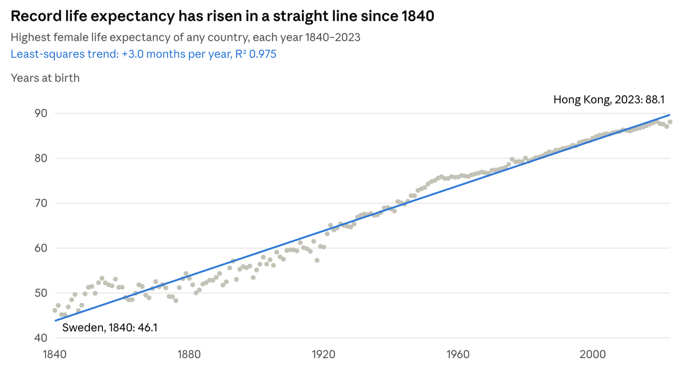

One of the boldest predictions about artificial intelligence is that it will eventually make us immortal.
The idea is called Longevity Escape Velocity (LEV): a point at which medical advances add more than one year to our remaining life expectancy for every year that passes. Once we cross that threshold, we could theoretically stay ahead of aging indefinitely.
Ray Kurzweil has predicted that humanity could reach this point by 2029. And with artificial general intelligence (AGI) potentially accelerating scientific discovery, the argument sounds increasingly plausible: if AI becomes exponentially smarter, shouldn’t medicine advance exponentially too?
I don’t think so. And nearly 200 years of human longevity data suggest why.
The fundamental problem is that exponential technological progress does not necessarily produce exponential gains in lifespan.
We may be getting exponentially better at solving biological problems. But those problems may also become exponentially harder as we try to extend life further.
The result? Two exponentials fighting each other, producing something surprisingly ordinary: a straight line.

Each dot is the record holder country for that year, the country where women lived longest.
1. Two Centuries of Progress. No Exponential Takeoff.
If longevity escape velocity were approaching, you might expect the historical trajectory of human life expectancy to be bending upward, with each generation gaining more years than the last.
But that’s not what the data shows.
In a landmark 2002 paper, researchers Jim Oeppen and James Vaupel examined the world’s highest recorded national female life expectancy, going back to 1840.
Their finding was remarkable: the record had increased at an almost perfectly linear rate of approximately three months per calendar year.
That’s one additional year of life expectancy for every four years that pass.
The historical chart published by Our World in Data tells the story beautifully. Despite revolutionary advances in medicine, the long-term trend looks remarkably like a straight line.
No exponential acceleration. No obvious inflection point. No sign of an imminent longevity singularity.
And consider everything humanity has achieved during that period.
We discovered antibiotics. Developed vaccines. Introduced sanitation systems. Dramatically reduced infant mortality. Invented modern surgery, organ transplantation, cancer therapies, statins, and countless other medical interventions.
We transformed medicine from a relatively primitive practice into a sophisticated, technology-driven science.
Yet the record life expectancy frontier kept advancing at roughly the same linear pace.
Global life expectancy also rose enormously, from around 32 years in 1900 to more than 70 years today, although its trajectory differs from the record-country trend. Much of the early improvement came from preventing deaths in infancy and childhood, rather than radically extending the limits of old age. The global historical data makes that distinction important.
More troubling for the escape velocity thesis, recent progress in the longest-lived populations appears to be slowing rather than accelerating. A 2024 study in Nature Aging found that improvements in life expectancy have decelerated since 1990 in several of the world’s longest-lived populations.
Of course, historical trends don’t prove what the future will look like. A breakthrough could change the trajectory.
But after two centuries of extraordinary medical progress, the exponential takeoff promised by longevity enthusiasts remains conspicuously absent.
Why?
2. Exponential Progress → Linear Lifespan
Here’s my hypothesis:
The difficulty of extending human life increases so rapidly that even exponential advances in technology produce only linear improvements in lifespan.
There’s a surprisingly elegant mathematical reason this might happen.
Human mortality follows an approximate relationship called the Gompertz law.
During much of adulthood, the risk of dying rises approximately exponentially with age. A common approximation is that adult mortality risk doubles about every eight years.
Think about what that means.
Suppose a medical breakthrough cuts mortality risk in half across adult ages. In this simplified model, a 70-year-old would face roughly the mortality risk previously associated with a 62-year-old.
That’s a tremendous achievement.
But to gain another equivalent shift, we would need to cut mortality risk in half again.
And then again.
Each additional increment of life requires another multiplicative improvement in survival.
Mathematically, if mortality increases with age approximately as:
where \(b\) is roughly 0.085 per year, then reducing mortality by a factor of two corresponds to shifting the age-related mortality curve by approximately eight years.
This gives us an important intuition: a constant percentage reduction in mortality produces an approximately constant shift in the age-related mortality curve.
Even if our interventions become exponentially more effective at reducing mortality, the resulting gains in life expectancy can remain roughly linear.
Under this simplified model, achieving longevity escape velocity would require sustained mortality reductions of roughly 8% or more per year across adult ages, equivalent to repeatedly halving mortality risk about every eight years.
And it would need to keep happening.
This is not a precise mathematical requirement for every conceivable longevity technology. Real mortality patterns are more complicated, and interventions that change the rate of biological aging itself could behave differently.
But it illustrates why the challenge is so formidable.
The problem isn’t necessarily that medicine is progressing too slowly.
It’s that the biological difficulty of staying alive rises dramatically as we age.
When your technological progress is exponential, but the challenge you’re attacking also grows exponentially, the payoff may be only linear.
That’s the central paradox of longevity research.
3. Even Curing Heart Disease Buys Surprisingly Little Time
Consider one of humanity’s biggest killers: heart disease.
Imagine we develop a perfect treatment. Heart disease disappears completely. No heart attacks, no fatal coronary disease.
How much longer would the average person live?
Ten years? Twenty?
Not even close.
A published analysis of U.S. mortality data estimated that eliminating heart disease deaths would have increased average life expectancy at birth by approximately 2.7 years in 2000.
Think about that.
Eliminate one of the leading causes of death entirely, and you gain only a few years on average.
Why?
Because death has competing causes.
Save someone from a heart attack at 80, and they’re still 80. Their kidneys are still aging. Their immune system is still deteriorating. Their cells are still accumulating damage. Their risk of cancer, stroke, dementia, and other diseases continues to rise.
You haven’t eliminated aging. You’ve eliminated one way that aging eventually kills us.
Epidemiologist S. Jay Olshansky has made a similar point, estimating that eliminating cancer would add only a few years to life expectancy, while eliminating cardiovascular disease would deliver a similarly modest gain, as discussed in this interview.
This is an extraordinary illustration of the problem.
We can spend decades and billions of dollars fighting a major cause of death, achieve spectacular success, and still barely move the lifespan frontier.
That’s because the human body isn’t a machine with one defective component.
It’s an interconnected system with countless potential failure modes, many of which become more likely with age.
Fix one, and the others remain.
Curing diseases one at a time is not a realistic path to immortality.
To achieve truly radical life extension, we would have to address the fundamental mechanisms of aging itself.
Which brings us to the strongest argument for AGI.
4. The Best Argument for AGI: Stop Fighting Diseases and Start Reversing Aging
There is a legitimate weakness in the historical argument I’ve made so far.
Nearly all the medical progress of the past two centuries has focused on preventing and treating specific causes of death.
But what if AGI enables something fundamentally different?
What if, instead of curing heart disease, cancer, Alzheimer’s, and hundreds of other age-related conditions separately, we discover how to slow or reverse the underlying biological aging process?
That could change everything.
Researchers have already identified numerous interconnected mechanisms associated with aging: genomic instability, cellular senescence, mitochondrial dysfunction, loss of proteostasis, altered nutrient sensing, and others.
Some experimental interventions have produced remarkable results in animals.
Certain genetic mutations can double the lifespan of worms. Rapamycin has extended lifespan in mice by 25% or more, with results varying considerably by sex, dose, and experimental conditions, as documented in published mouse research.
These experiments demonstrate something important: biological aging is not necessarily an immutable clock. It can be manipulated.
Now imagine AGI systems capable of understanding enormously complex biological networks, designing drugs, predicting molecular interactions, and discovering interventions that human researchers might never find.
Instead of spending decades investigating one pathway, we might explore thousands simultaneously.
Perhaps aging turns out to have a manageable number of underlying control mechanisms. Perhaps the right combination of interventions could restore tissues, repair accumulated damage, and repeatedly return biological systems to a younger state.
If so, historical extrapolation could become irrelevant.
We wouldn’t merely be lowering mortality at a given age. We would be changing the relationship between age and mortality itself.
That’s a powerful counterargument, and I take it seriously.
But the distance between slowing aging in a mouse and indefinitely reversing aging in a human is enormous.
And AGI doesn’t automatically make that distance disappear.
5. Intelligence Can Accelerate Discovery. Biology Still Needs Experiments
The central promise of AGI is that intelligence will no longer be the bottleneck in scientific progress.
But intelligence is only one bottleneck.
Biology is an experimental science. Understanding a mechanism isn’t the same as successfully intervening in it. Designing a promising therapy isn’t the same as proving it works safely in a living human.
A drug must reach the right cells, interact with the right pathways, avoid unintended effects, work across different tissues, and remain safe over years of use.
And aging itself takes time to observe.
If you want to demonstrate that an intervention extends human lifespan, the most convincing evidence comes from humans actually living longer.
That can take decades.
Biological markers, including epigenetic clocks, may dramatically shorten research cycles. But measuring a biomarker associated with aging is not yet equivalent to proving that a person will live substantially longer.
Even if AGI compresses years of theoretical research into days, it cannot automatically compress every biological experiment into the same timeframe.
There are also reasons to be cautious when extrapolating animal results – effect sizes shrink as organisms get more complex. Worm lifespans double, mice gain 10 to 25%, and the evidence in primates is mixed. That is the exponential-complexity thesis again. A more complex body has more parallel ways to fail, so a lever that controls a worm's aging moves only one of many in a mammal.
Interventions that dramatically extend lifespan in relatively simple organisms have not yet delivered comparable results in humans.
AGI may solve the intelligence bottleneck without solving the biology bottleneck.
6. The Data Is Bending the Wrong Way
There’s another reason I’m skeptical about reaching longevity escape velocity anytime soon.
If we were approaching a revolutionary inflection point, we might expect at least some preliminary acceleration in observed longevity.
Instead, the recent data offers reasons for caution.
The 2024 Nature Aging analysis found that improvements in life expectancy in the longest-lived populations have slowed, with the authors questioning the plausibility of radical life extension this century unless biological aging can be substantially slowed.
Meanwhile, Jeanne Calment’s verified human longevity record of 122 years, set in 1997, remains unbeaten.
A controversial 2016 study on maximum human lifespan suggested that the age reached by the world’s oldest individuals may have plateaued, although the existence of a fixed lifespan limit remains actively debated.
None of this proves that radical life extension is impossible.
But it certainly doesn’t look like a field already approaching escape velocity.
And consider the timeline.
Kurzweil’s prediction of longevity escape velocity by 2029 would require an extraordinary acceleration in our ability to extend human life over just a few years.
We aren’t talking about another incremental medical advance.
We are talking about a fundamental transformation of the relationship between human age and mortality, achieved on a timeline dramatically shorter than the time normally required to establish the long-term effects of medical interventions.
Could it happen?
In principle, perhaps.
But the empirical evidence for such an imminent transformation is extraordinarily thin.
Conclusions: The Difference Between Living Longer and Living Forever
I expect AGI to revolutionize medicine.
It will help us detect cancers earlier, design much more effective drugs, regenerate damaged organs, develop personalized interventions, and eventually slow important aspects of biological aging.
It will help us maintain the linear rate of progress in human lifespan, which will help us gain decades of healthier life. Perhaps much more.
That would be one of the greatest achievements in human history.
But longevity escape velocity is a far stronger claim.
It requires medical progress to continuously outrun the accumulation of age-related mortality risk. And even achieving that wouldn’t make us literally immortal: accidents, infections, environmental hazards, and other external risks would remain.
The key distinction is between extending life and creating a sustainable process that can extend life indefinitely.
The first seems highly plausible.
The second remains an extraordinary claim with little direct empirical support.
The goal worth pursuing is not necessarily immortality. It’s healthspan: extending the years in which we remain healthy, active, mentally sharp, and free of debilitating disease.
Adding 20 healthy years to the average human life would be an extraordinary victory, even if we never reach escape velocity.
And perhaps that’s the more realistic future of AI-powered medicine.
AGI may dramatically improve how long we live. But exponential intelligence alone doesn’t guarantee that we’ll live forever.
Comments